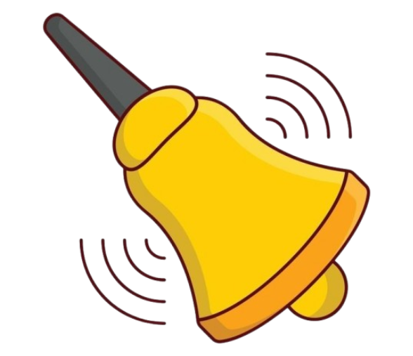
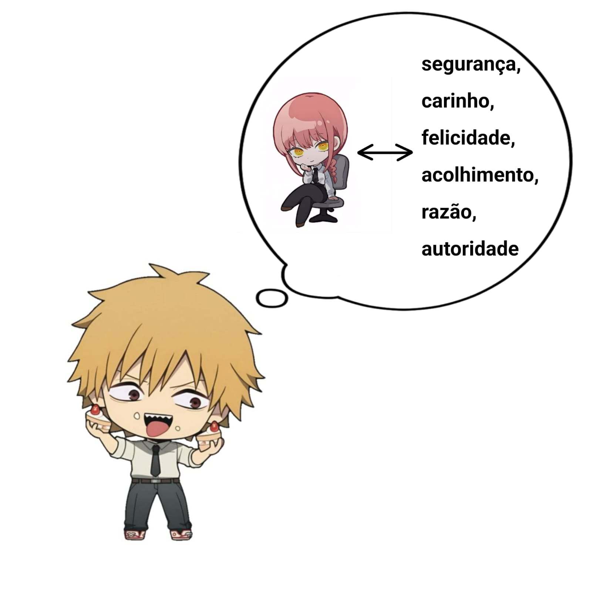

Para compreender o behaviorismo, é preciso primeiro voltar alguns passos antes e compreender o que o fundamentou. Antes da fundação da escola behaviorista por John B. Watson (1878-1958), outros estudiosos já haviam explorado o âmbito do comportamento animal. Um deles foi Ivan Pavlov, fisiologista russo nascido em meados do século XIX. Seu estudo com cachorros alcançou avanços significativos para a ciência, os quais mais tarde serviriam de inspiração para Watson.
Pavlov foi criador do condicionamento clássico, também conhecido como aprendizagem associativa ou condicionamento pavloviano. Ele é um processo inconsciente no qual uma resposta automática e condicionada passa a ser associada a um estímulo específico. Embora Edwin Twitmyer tenha publicado descobertas sobre condicionamento clássico um ano antes de Ivan Pavlov, o trabalho mais reconhecido na área é atribuído ao último.
Antes de Pavlov, os pesquisadores Watson e Raynor queriam testar a ideia de que o medo poderia ser adquirido por meio do condicionamento clássico. Seu sujeito era o pequeno Albert, filho de onze meses de uma funcionária da clínica. A mãe da criança não sabia nada sobre o experimento. Watson e Raynor apresentaram a Albert um rato branco de laboratório enquanto emitiam um ruído alto. O pequeno Albert logo associou o ruído alto ao rato branco e foi condicionado a temê-lo. Esse medo foi então generalizado para outros objetos brancos e fofos, como a barba do Papai Noel e um casaco de pele de foca. Não se sabe se esse medo intenso foi revertido. Muitas questões éticas foram negligenciadas nesse experimento. As diretrizes éticas para pesquisas psicológicas certamente melhoraram e são muito diferentes hoje em dia.
No final da década de 1890, Ivan Petrovich Pavlov observou que as respostas físicas dos cães à comida mudavam gradualmente. Inicialmente, os cães salivavam apenas quando a comida era apresentada diretamente. No entanto, ele notou posteriormente que os cães começaram a salivar ligeiramente antes da chegada da comida em resposta a sons consistentemente associados à alimentação, como o som do carrinho de comida. Para testar sua teoria, Pavlov realizou um experimento no qual tocava um sino pouco antes de apresentar a comida aos cães. Inicialmente, os cães não salivavam em resposta ao sino. No entanto, à medida que aprendiam a associar o som do sino à chegada da comida, começaram a salivar apenas com o som.
Um estímulo incondicionado é algo que desencadeia naturalmente uma resposta automática. No experimento de Pavlov, a comida atuou como estímulo incondicionado. A resposta incondicionada é a reação automática a esse estímulo, que, neste caso, foi a salivação dos cães em resposta à comida. Um estímulo neutro inicialmente não provoca nenhuma resposta. Pavlov introduziu o toque do sino como um estímulo neutro. Com o tempo, um estímulo neutro pode se tornar um estímulo condicionado, que eventualmente desencadeia uma resposta condicionada. No experimento de Pavlov, o toque do sino tornou-se o estímulo condicionado e a salivação, a resposta condicionada. Essencialmente, o estímulo neutro se transforma no estímulo condicionado. Embora as respostas incondicionada e condicionada sejam a mesma reação fisiológica — a salivação —, a diferença reside no estímulo que as provoca. Nos experimentos de Pavlov, a salivação era a resposta. A resposta incondicionada, desencadeada pela comida, era a salivação, enquanto o sino desencadeava a resposta condicionada.

Produção média de saliva normalmente: 0,05 a 0,2 mL/min;
Produção média de saliva ao sentir o cheiro de comida: 0,5 a 2 mL/min.
Produção média de saliva normalmente: 0,05 a 0,2 mL/min;
Produção média de saliva ao ouvir o sino: 0,5 a 1 mL/min;
